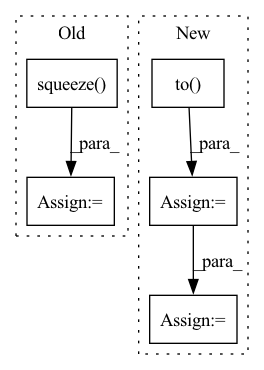

Pattern ID :27844

Before Change
pred = model(
torch.autograd.Variable(batch).to(device), lengths.cpu().numpy()
) //// perform forward pass
pred = torch.squeeze(pred)
loss = criterion(
pred.to(device), torch.autograd.Variable(targets.float()).to(device)
) //// compute loss
loss.backward() //// perform backward pass
optimizer.step() //// update weights
pred_val = pred >= 0.5 //// get predictions
y_true += list(targets.int().numpy()) //// accumulate targets from batch
y_pred += list(
pred_val.data.int().detach().cpu().numpy()
After Change
model.zero_grad()
//// perform forward pass
pred = model(
sent1.to(device),
sent2.to(device),
sents1_len.to(device),
sents2_len.to(device),
)
//// compute loss
loss = criterion(
pred.to(device), torch.autograd.Variable(targets.float()).to(device)
)
//// perform backward pass
loss.backward()
//// update weights
optimizer.step()
//// accumulate targets from batch
y_true += list(targets.float().numpy())
//// accumulate preds from batch
y_pred += list(pred.data.float().detach().cpu().numpy())
//// accumulate train loss
total_loss += loss
In pattern: SUPERPATTERN
Frequency: 4
Non-data size: 5
Instances
Fragment ID: 82769646
Project Name: shahrukhx01/siamese-nn-semantic-text-similarity
Commit Name: f3d054dd14ef532c408b1306c3341115777ac22f
Time: 2021-12-30
Author: sk28671@gmail.com
File Name: siamese_sts/trainer/train.py
M Class Name: AnonimousClass
N Class Name: AnonimousClass
M Method Name: train_model(6)
N Method Name: train_model(6)
M Parent Class:
N Parent Class:
M File Name: siamese_sts/trainer/train.py
N File Name: siamese_sts/trainer/train.py
M Start Line: 16
M End Line: 47
N Start Line: 16
N End Line: 59
'>
Before Change
pred_mask_vis = colorize_semseg(pred_mask, num_classes=SYNPICK_CLASSES) // [T, 3, h, w]
frames_colorized = colorize_semseg(postprocess_mask(frames_seg.squeeze()), num_classes=SYNPICK_CLASSES).unsqueeze(dim=0) // [1, T, 3, h, w]
frames_colorized_vis = postprocess_img(frames_colorized.squeeze(dim=0)) // [T, 3, h, w]
input_colorized = frames_colorized[:VIDEO_IN_LENGTH]
colorized_then_pred = pred_colorized_mask_model.pred_n(input_colorized, pred_length=VIDEO_PRED_LENGTH)
After Change
with torch.no_grad():
for i in tqdm(range(10)):
frames = next(iter_loader).to(DEVICE) // [1, T, 3, h, w]
frames_vis = postprocess_img(frames.squeeze(dim=0)) // [T, 3, h, w]
input = frames[:, :VIDEO_IN_LENGTH] // [1, t, 3, h, w]
pred_rgb = pred_rgb_model.pred_n(input, pred_length=VIDEO_PRED_LENGTH)
pred_rgb = torch.cat([input, pred_rgb], dim=1) // [1, T, 3, h, w]
pred_rgb_vis = postprocess_img(pred_rgb.squeeze(dim=0)) // [T, 3, h, w]
pred_rgb = torch.stack([seg_model(pred_rgb[:, i]) for i in range(pred_rgb.shape[1])], dim=1)
pred_rgb = pred_rgb.argmax(dim=2).squeeze() // [T, h, w]
pred_then_colorized_vis = colorize_semseg(postprocess_mask(pred_rgb), num_classes=SYNPICK_CLASSES).transpose(0, 3, 1, 2) // [T, 3, h, w]
frames_seg = torch.stack([seg_model(frames[:, i]) for i in range(frames.shape[1])], dim=1).argmax(dim=2) // [1, T, 1, h, w]
frames_seg_in = torch.stack([(frames_seg == i) for i in range(SYNPICK_CLASSES)], dim=2).float() // [1, T, c, h, w] one-hot float
input_seg = frames_seg_in[:, :VIDEO_IN_LENGTH] // [1, t, c, h, w]
pred_mask = pred_mask_model.pred_n(input_seg, pred_length=VIDEO_PRED_LENGTH).argmax(dim=2) // [1, n, 1, h, w]
pred_mask = torch.cat([input_seg.argmax(dim=2), pred_mask], dim=1).squeeze() // [T, h, w]
pred_mask_vis = colorize_semseg(postprocess_mask(pred_mask), num_classes=SYNPICK_CLASSES).transpose(0, 3, 1, 2) // [T, 3, h, w]
frames_colorized = colorize_semseg(postprocess_mask(frames_seg.squeeze()), num_classes=SYNPICK_CLASSES)
frames_colorized_vis = frames_colorized.transpose(0, 3, 1, 2) // [T, 3, h, w]
input_colorized = preprocess_img(frames_colorized[:VIDEO_IN_LENGTH]).to(DEVICE).unsqueeze(dim=0) // [b, t, 3, h, w]
colorized_then_pred = pred_colorized_mask_model.pred_n(input_colorized, pred_length=VIDEO_PRED_LENGTH)
'>
Fragment ID: 82769517
Project Name: ais-bonn/vp-suite
Commit Name: 13016d4ab8ba4f8e7ee087155a6c5171f4d00ba3
Time: 2021-08-02
Author: boltres@ais.uni-bonn.de
File Name: scripts/visualize_4_way.py
M Class Name: AnonimousClass
N Class Name: AnonimousClass
M Method Name: visualize_4_way(1)
N Method Name: visualize_4_way(1)
M Parent Class:
N Parent Class:
M File Name: scripts/visualize_4_way.py
N File Name: scripts/visualize_4_way.py
M Start Line: 16
M End Line: 73
N Start Line: 17
N End Line: 74
'>
Before Change
tgt_in = torch.zeros(btz,1, dtype=torch.long).fill_(self.sos_id).to(device)
for step in range(self.max_len):
pred = self.decoder(tgt_in, enc_out, enc_mask)
preds[:,step,:] = pred.squeeze(-2)
y_hat = pred.max(-1)[1]
tgt_in = y_hat
y_hats[:,step] = y_hat.squeeze(dim=-1)
After Change
if self.feat_extractor == "vgg" or self.feat_extractor == "w2v":
inputs,input_length = self.conv(inputs), input_length>>2
enc_mask = get_attn_pad_mask(input_length).to(inputs.device)
enc_out, enc_mask = self.encoder(inputs, enc_mask)
preds = torch.zeros(btz, self.max_len, self.out_dim, dtype=torch.float32).to(device)
y_hats = torch.zeros(btz, self.max_len, dtype=torch.long).fill_(self.sos_id).to(device)
tgt_in = torch.zeros(btz,1, dtype=torch.long).fill_(self.sos_id).to(device)
for step in range(self.max_len):
//tgt_mask = target_mask(tgt_in, ignore_id=self.pad_id).to(tgt.device).unsqueeze(-3)
tgt_mask = subsequent_mask(step+1).to(tgt.device).unsqueeze(0)
preds = self.decoder(tgt_in, tgt_mask, enc_out, enc_mask)
//preds[:,step,:] = pred.squeeze(-2)
y_hat = preds.max(-1)[1]
//print(y_hat)
//print(y_hat)
tgt_in = torch.cat((tgt_in,y_hat[:,step].unsqueeze(1)), dim=1)
//y_hats[:,step] = y_hat.squeeze(dim=-1)
//y_hats[:,step] = y_hat[:,step]
y_hats = tgt_in[:,1:]
if tgt is None:
for testing
golds = None
'>
Fragment ID: 82769757
Project Name: qute012/kosr
Commit Name: bf3ec27288e38044b86f90a61978e360690072f5
Time: 2021-02-03
Author: ejrwls012@gmail.com
File Name: kosr/model/transformer/model.py
M Class Name: Transformer
N Class Name: Transformer
M Method Name: greedy_search(4)
N Method Name: greedy_search(4)
M Parent Class: nn.Module
N Parent Class: nn.Module
M File Name: kosr/model/transformer/model.py
N File Name: kosr/model/transformer/model.py
M Start Line: 77
M End Line: 88
N Start Line: 80
N End Line: 98
'>
Before Change
logits = logits.reshape(batch_size * seq_len, -1) // (batch_size * seq_len, vocab_size)
mask_logits = logits[mask_positions_after_reshaped] // (batch * label_num, vocab_size)
mask_labels = mask_labels.reshape(-1, 1).squeeze() // (batch * label_num)
loss = cross_entropy_criterion(mask_logits, mask_labels)
return loss / masked_lm_scale
After Change
single_mask_logits = single_logits[single_mask_positions] // (mask_label_num, vocab_size)
single_mask_logits = single_mask_logits.repeat(len(single_sub_mask_labels), 1, 1) // (sub_label_num, mask_label_num, vocab_size)
single_mask_logits = single_mask_logits.reshape(-1, vocab_size) // (sub_label_num * mask_label_num, vocab_size)
single_sub_mask_labels = torch.LongTensor(single_sub_mask_labels).to(device) // (sub_label_num, mask_label_num)
single_sub_mask_labels = single_sub_mask_labels.reshape(-1, 1).squeeze() // (sub_label_num * mask_label_num)
cur_loss = cross_entropy_criterion(single_mask_logits, single_sub_mask_labels)
cur_loss = cur_loss / len(single_sub_mask_labels)
if not loss:
loss = cur_loss
else:
loss += cur_loss
loss = loss / batch_size // (1,)
return loss / masked_lm_scale
'>
Fragment ID: 82769643
Project Name: harderthenharder/transformers_tasks
Commit Name: bf825bb22c43795f1e3a08cf8969ddc613051e76
Time: 2022-11-30
Author: pankeyu@pankeyus-MacBook-Pro.local
File Name: prompt_tasks/p-tuning/utils.py
M Class Name: AnonimousClass
N Class Name: AnonimousClass
M Method Name: mlm_loss(6)
N Method Name: mlm_loss(6)
M Parent Class:
N Parent Class:
M File Name: prompt_tasks/p-tuning/utils.py
N File Name: prompt_tasks/p-tuning/utils.py
M Start Line: 204
M End Line: 212
N Start Line: 190
N End Line: 203